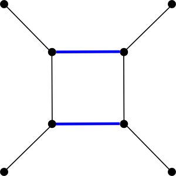
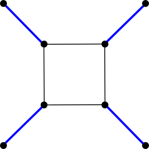

template <typename Graph, typename MateMap> void edmonds_maximum_cardinality_matching(const Graph& g, MateMap mate); template <typename Graph, typename MateMap, typename VertexIndexMap> void edmonds_maximum_cardinality_matching(const Graph& g, MateMap mate, VertexIndexMap vm); template <typename Graph, typename MateMap> bool checked_edmonds_maximum_cardinality_matching(const Graph& g, MateMap mate); template <typename Graph, typename MateMap, typename VertexIndexMap> bool checked_edmonds_maximum_cardinality_matching(const Graph& g, MateMap mate, VertexIndexMap vm);
|  |  |
Both edmonds_maximum_cardinality_matching and checked_edmonds_maximum_cardinality_matching find the maximum cardinality matching in any undirected graph. The matching is returned in a MateMap, which is a ReadWritePropertyMap that maps vertices to vertices. In the mapping returned, each vertex is either mapped to the vertex it's matched to, or to graph_traits<Graph>::null_vertex() if it doesn't participate in the matching. If no VertexIndexMap is provided, both functions assume that the VertexIndexMap is provided as an internal graph property accessible by calling get(vertex_index,g). The only difference between edmonds_maximum_cardinality_matching and checked_edmonds_maximum_cardinality_matching is that as a final step, the latter algorithm runs a simple verification on the matching computed and returns true if and only if the matching is indeed a maximum cardinality matching.
Given a matching M, any vertex that isn't covered by an edge in M is called free. Any simple path containing exactly 2n + 1 edges that starts and ends at free vertices and contains n edges from M is called an alternating path. Given an alternating path p, all matching and non-matching edges on p can be swapped, resulting in a new matching that's larger than the original matching by exactly one edge. This method of incrementally increasing the size of matching, along with the following fact, forms the basis of Edmonds' matching algorithm:
An alternating path through the matching M exists if and only if M is not a maximum cardinality matching.The difficult part is, of course, finding an augmenting path whenever one exists. The algorithm we use for finding a maximum cardinality matching consists of three basic steps:
When quoting time bounds for algorithms, we assume that VertexIndexMap is a property map that allows for constant-time mapping between vertices and indices (which is easily achieved if, for instance, the vertices are stored in contiguous memory.) We use n and m to represent the size of the vertex and edge sets, respectively, of the input graph.
Understanding how the verifier works requires a few graph-theoretic facts. Let m(G) be the size of a maximum cardinality matching in the graph G. Denote by o(G) the number of connected components in G of odd cardinality, and for a set of vertices X, denote by G - X the induced graph on the vertex set V(G) - X. Then the Tutte-Berge Formula says that
2 * m(G) = min ( |V(G)| + |X| - o(G-X) )Where the minimum is taken over all subsets X of the vertex set V(G). A side effect of the Edmonds Blossom-Shrinking algorithm is that it computes what is known as the Edmonds-Gallai decomposition of a graph: it decomposes the graph into three disjoint sets of vertices, one of which achieves the minimum in the Tutte-Berge Formula. An outline of our verification procedure is: Given a Graph g and MateMap mate,
template <typename Graph, typename MateMap, typename VertexIndexMap, template <typename, typename, typename> class AugmentingPathFinder, template <typename, typename> class InitialMatchingFinder, template <typename, typename, typename> class MatchingVerifier> bool matching(const Graph& g, MateMap mate, VertexIndexMap vm)The matching functions provided for you are just inlined specializations of this function: edmonds_maximum_cardinality_matching uses edmonds_augmenting_path_finder as the AugmentingPathFinder, extra_greedy_matching as the InitialMatchingFinder, and no_matching_verifier as the MatchingVerifier. checked_edmonds_maximum_cardinality_matching uses the same parameters except that maximum_cardinality_matching_verifier is used for the MatchingVerifier.
These aren't necessarily the best choices for any situation - for example, it's been claimed in the literature that for sparse graphs, Edmonds' algorithm converges to the maximum cardinality matching more quickly if it isn't supplied with an intitial matching. Such an algorithm can be easily assembled by calling matching with
Suppose instead that you want a relatively large matching quickly, but are not exactly interested in a maximum matching. Both extra_greedy_matching and greedy_matching find maximal matchings, which means they're guaranteed to be at least half the size of a maximum cardinality matching, so you could call matching with
boost/graph/max_cardinality_matching.hpp
An undirected graph. The graph type must be a model of Vertex and Edge List Graph and Incidence Graph.IN: VertexIndexMap vm
Must be a model of ReadablePropertyMap, mapping vertices to integer indices.OUT: MateMap mate
Must be a model of ReadWritePropertyMap, mapping vertices to vertices. For any vertex v in the graph, get(mate,v) will be the vertex that v is matched to, or graph_traits::null_vertex() if v isn't matched.
Let m and n be the number of edges and vertices in the input graph, respectively. Assuming the VertexIndexMap supplied allows constant-time lookups, the time complexity for both edmonds_matching and checked_edmonds_matching is O(mn alpha(m,n)). alpha(m,n) is a slow growing function that is at most 4 for any feasible input.
The file example/matching_example.cpp
contains an example.
| Copyright © 2005 |
Aaron Windsor (aaron.windsor@gmail.com) |